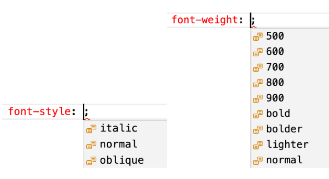

Como aplicar isso na prática?
Em muitos dispositivos algumas letras não funcionam, como a Helvetica nos celulares, por isso usamos o que chamamos de safe-combination,
que consiste em colocar mais de uma fonte e colocá-las em sequência, o próprio VSCode recomenda algumas safe-combinations. Você pode pesquisar por elas
em "CSS Web Safe Combinations" da W3Schools.
Para escolher a família tipográfica de determinado texto usamos a propriedade font-family das CSS. Se indicarmos mais de
uma família em sequência, estamos dizendo ao navegador para dar preferência para a primeira, esoclhendo a seguinte só se a primeira não
for encontrada. Essa estratégia seguirá até a última, que normalmente é: serif, sans-serif e monospaced.
Ex:
<style>
body {
font-family: Arial, Helvetica, sans-serif;
color: black.
}
h1 {
font-family:> 'Franklin Gothic Medium', 'Arial Narrow', Arial, sans-serif;
color: rgb(24, 97, 126)
}
h2 {
font-family: 'Times New Roman', Times, serif;
color: rgb(33, 136, 161);
}
p {
font-family: 'Courier New', Courier, monospace;
}
</style>
No exemplo acima seus h1 usarão preferencialmente a fonte Franklin Gothic Medium, mas essa fonte não existe em smartphones, que possuem a fonte Arial Narrow que é bem parecida. Caso não tenha nenhuma das duas a fonte Arial será utilizada. Se isso falhar também o sistema escolherá uma fonte genérica sem serifa.
Vamos falar de tamanhos
Além de escolher a família nós também podemos alterar os tanhos e estilos extras de qualquer componente textual do HTML5.
Existem várias medidas para especificar o tamanho da fonte, como cm (centímetro), in (polegadas), pt (pontos), pc (paicas), px (pixels), etc. Para tamanhos de fonte que serão exibidos na tela o W3C recomenda o uso do px ou em.
Existem as medidas absolutas (cm, mm, in, px, pt, pc) e as medidas relativas (em, ex, rem, vw, vh, %). As meidas absolutas não funcionam muito bem, pois o que você considera 1 cm na tela em q programa pode não ser em outra tela. São relativos a alguma coisa como tamanho base de uma fonte, tamanho tela, etc.
A medida em é uma medida referencial em relação ao tamanho da fonte. O tamanho normal da fonte é 16px, isso equivale a 1em. Se você quer dobrar o tamanho dela, basta usar 2em. Ex:
h1 {
font-family: 'Franklin Gothic Medium', 'Arial Narrow', Arial, sans-serif;
font-size: 2em;
}
h2 {
font-family: 'Times New Roman', Times, serif;
font-size: 1.5em;
}
Outros estilos
Existem outras formatações usadas em CSS, são propriedades font-style para aplicar o itálico e font-weight para deixar a letra mais magra ou mais gorda, sem existir o fator semântico.
Ex:

O padrão dessas propriedades é o valor "normal", mas pode aplicar o valor itálico ao font-style usando italic (mais compatível) ou oblique (menos compatível).
Já o negrito pode ser aplicado por nomes ou números indicados, na imagem acima.
Me dá uma mãozinha?
Existe um atalho para fazer as formatações que deseja, conhecido como shorthands. Nesse caso se trata da propriedade font. Ao invés de fazer várias configurações em múltiplas linhas...
p {
font-family: Arial, Helvetica, sans-serif;
font-size: 1em;
font-style: italic;
font-weight: bold;
}
Podemos simplificar tudo:
p {
font: italic bold 1em Arial, Helvetica, sans-serif;
}
A ordem dos atributos em uma shorthans em CSS é importante, nesse caso é:
- font-style
- font variant
- font-weight
- font-size / line-height
- font-family
Alinhamentos
De forma simples, existem 4 formas de você alinhar seus textos:
text-align: center; (O texto começa no centro)
text-align: right;O texto começa no lado direito)
text-align: left; (O texto começa no lado esquerdo)
text-align: jutify; (O texto começa do lado esquerdo e vai até o lado direito, sem deixar grandes espaços em branco)
Existe também uma propriedade chamada "text-indent" que é o espaçamento do início do parágrafo. Você coloca o valor dessa propriedade em px ou em. 20px é um tamanho bom.